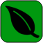

Name: Treant
Pronunciation: TREE-ent
Scientific Name: Floradon treantus
Classification: Floradon
Height: 3-4' (0.8-1.2 m)
Threat Level: Moderate
Associated Elements: 
Etymology: From the Dracammarum word treantus.
Characteristics: Treants are hyperevolved deciduous trees, given mobility and a mind. Their bodies are that of tree trunks, their legs are made up of two thick roots, and their arms are two thick branches. While the feet do not end in any foot-like protrusions, the arms have large hands that end in sharpened digits. Other plant-like appendages such as vines and thorns can be found on the arms, depending on the subspecies of treant. The eyes and mouth of a treant are generally hollowed out portions toward the upper portions of their trunks. Their tops are covered in a network of branches and leaves. The bark covering their entire bodies acts similar to a coat of light armor.
Habitat: Treants generally live deep in deciduous forests and jungles.
Behavior: Treants are very protective of their lands, even against other treants. They become particularly aggressive when the trees in their territory are cut down or burned. In such cases treants are known to leave their lands and attack Anthros and other creatures in a fit of rage. Attacks are usually done by clawing, punching, or kicking enemies. Some treants have the capability to attack using their vine or thorn appendages. Others still can use razor-sharp leaves to cut into their foes. Some treants have access to nature magic and can use it to harm or heal. Despite their perceived lack of intelligence, they are known to come together and fight in groups. They even have a psuedo-hierarchy among their own kind: Those that wield magic have a greater tendency to be leader than more physically based warriors. As far as food goes, treants mostly photosynthesize their own food. When they do eat, they tend to eat fruits and small insects. This consumption helps fuel their sap production.
Interactions: Treants are often not interacted with by Anthros in the world as these creatures are rarely considered worth the effort for the items they produce. However, some do harvest the sap they produce to make into syrups and sugary treats. More often than not, they are fought to protect their own territory from invasion. The arms and bark do act as makeshift weapons and armor, usable by travellers in the forest.